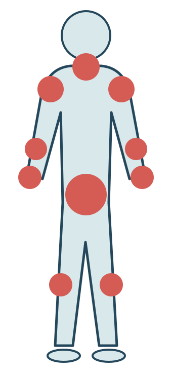

Dans ce module
- 1. Qu'est-ce que les TMS ?
- 2. Statistiques et chiffres clés
- 3. Enjeux humains, économiques et sociétaux
- 4. Zones corporelles touchées
▶️ Voir la vidéo (YouTube – INRS)
1. Qu'est-ce que les TMS ?
Les TMS résultent d'un déséquilibre entre les capacités fonctionnelles de l'individu et les sollicitations auxquelles il est exposé dans son activité professionnelle.
Principales pathologies TMS
| Pathologie | Zone touchée | Tableau MP |
|---|---|---|
| Syndrome du canal carpien | Poignet / Main | 57 |
| Tendinite de la coiffe des rotateurs | Épaule | 57 |
| Épicondylite (tennis elbow) | Coude | 57 |
| Lombalgie / Hernie discale | Rachis lombaire | 97, 98 |
| Hygroma du genou | Genou | 57 |
2. Statistiques et chiffres clés (INRS 2021, Assurance Maladie 2024)
Évolution des TMS en France
- Les TMS représentent la 1ère cause de maladie professionnelle en France
- Environ 40 000 TMS reconnus par an au titre du tableau 57 du régime général, niveau stabilisé depuis 2012 (INRS)
3. Enjeux humains, économiques et sociétaux
Enjeux humains
- Douleurs chroniques
- Perte d'autonomie
- Handicap potentiel
- Impact sur la vie personnelle
- Désinsertion professionnelle
Enjeux économiques
- Coûts directs (soins, indemnités)
- Coûts indirects (remplacement)
- Perte de productivité
- Hausse des cotisations AT/MP
- Contentieux juridiques
Enjeux sociétaux
- Charge pour l'Assurance Maladie
- Inégalités de santé au travail
- Vieillissement de la population active
- Attractivité des métiers pénibles
- Qualité de vie au travail
4. Zones corporelles touchées par les TMS

Zones touchées et tableaux de maladie professionnelle
| Zone | Tableau de MP | Part indicative* | Pathologies principales |
|---|---|---|---|
| Poignet / Main | 57 (poignet, main), 69 | ≈ 38 % | Syndrome du canal carpien, tendinites |
| Épaule | 57 | ≈ 30 % | Tendinite coiffe des rotateurs |
| Coude | 57 | ≈ 22 % | Épicondylite, épitrochléite |
| Rachis | 98 (charges lourdes), 97 (vibrations) | ≈ 7 % | Lombalgies, hernies discales |
| Genou | 57, 79 (ménisque) | ≈ 3 % | Hygroma, lésions méniscales |
* Répartition indicative couramment citée pour les TMS reconnus (hors lombalgies) ; source officielle INRS/Assurance Maladie non retrouvée. À présenter comme ordre de grandeur.
5. Critères de réussite d'une démarche de prévention
Les TMS sont indissociables du travail. Leur prévention suppose une connaissance fine des conditions et du contexte qui les génèrent.
On ne peut parler de suppression du risque mais uniquement de maîtrise du risque. Celle-ci passe notamment par une réflexion sur l'organisation du travail.
Détermination
Engagement volontaire de la direction et de tous les acteurs
Compétence
Formation des acteurs (PRAP, ergonomie)
⏰ Temps
Démarche inscrite dans la durée
La démarche ergonomique structurée est la seule piste de prévention pertinente. Elle se base sur le réel, est associée à un examen attentif des situations de travail, en particulier des process, des postes et des outils, en synergie avec l'ensemble des acteurs de l'entreprise.